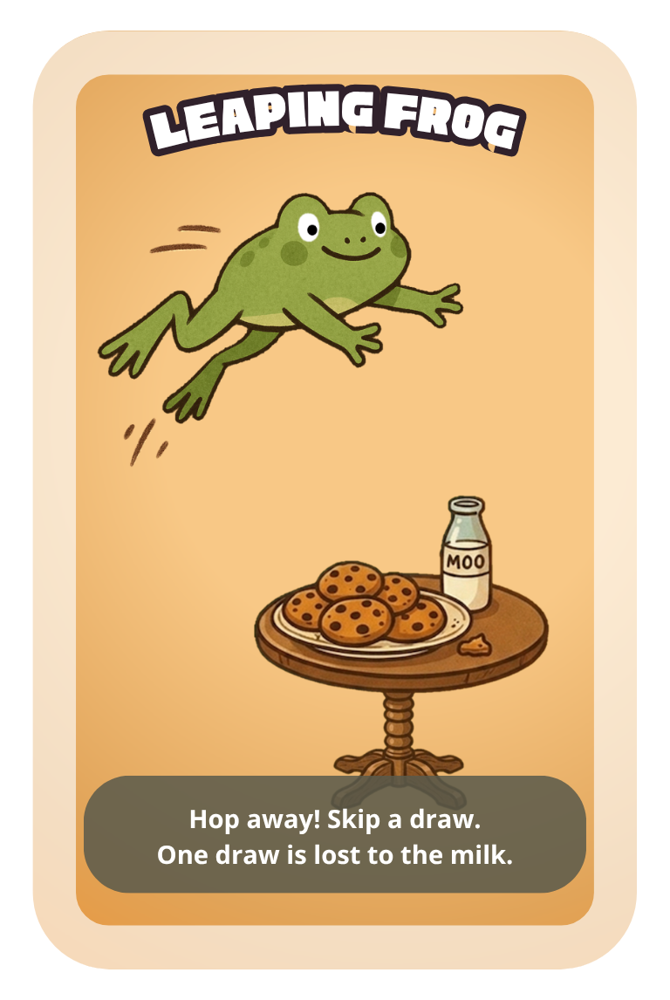

The tale of the one who skipped their turn crossed lands and lakes of milk, whispered between peasants, lest the king should hear!
Skip your draw phase. Pass the turn to the next player - no draw, no risk. If drawing multiple cards by another action's effect, each Leaping Frog skips one of those draws.